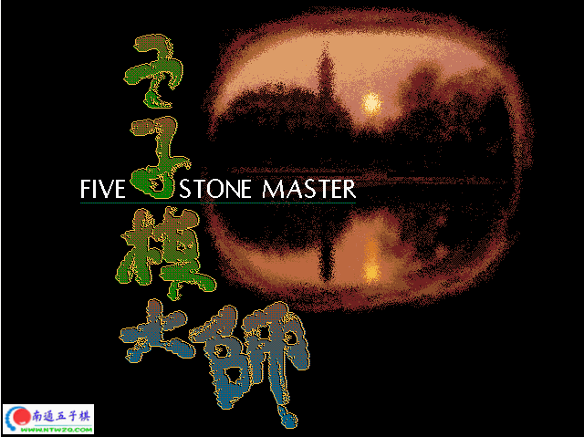
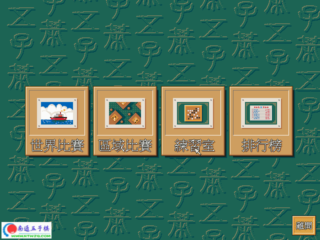
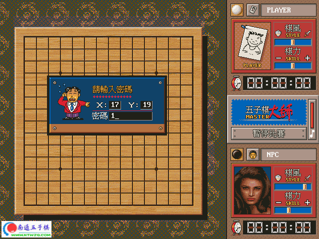
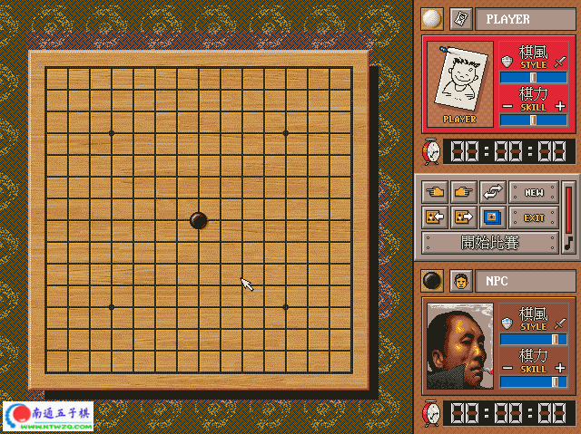
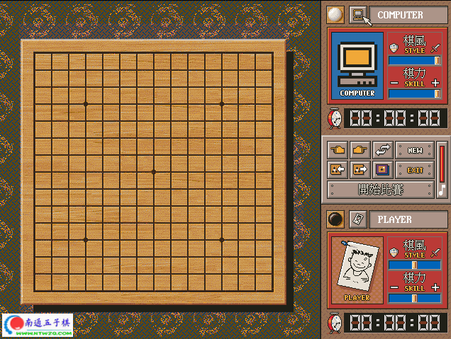

五子棋大师一
#1 五子棋大师一 作者：有志青年 发表时间：2006-2-5 13:56:35
有“棋力”和“棋风”双重选择，大约是99年的产品，dos版本，当然windows可以直接运行，好像是方圆软件出品的，当时购买正版，是一张软盘，整个程序很小。
后来的五子棋大师二，是光盘运行版，文件太大了。
当要输入密码的时候随意输入
启动界面

三种模式

比赛模式之世界大战：

练习模式

练习模式下点击鼠标所在位置，可以选择：人与电脑；人与虚拟选手；两人对下三种形式

#2 Re:五子棋大师一 作者：江南新绿 发表时间：2006-2-5 13:58:01
大师二玩过，象游戏，不专业。#3 Re:五子棋大师一 作者：有志青年 发表时间：2006-2-5 14:51:34
dos游戏的截图好麻烦，好不容易找了个软件搞了几张截图#4 Re:五子棋大师一 作者：对错过关 发表时间：2006-2-16 18:35:20
见过二，没有见过一，老土了，不过谢谢
#5 Re:五子棋大师一 作者：qinyiyu 发表时间：2006-2-26 18:04:49
厉害呀
搞不过
#6 Re:五子棋大师一 作者：yitianyu8457 发表时间：2006-2-28 17:13:27
我是新手 想学习一下 怎么下载啊#7 Re:五子棋大师一 作者：xpxpxp 发表时间：2006-2-28 17:46:20
太好了，谢谢#8 Re:五子棋大师一 作者：lzy8614 发表时间：2006-3-4 15:46:42
收下了,谢谢.
#9 Re:五子棋大师一 作者：嗒嗒嗒的人 发表时间：2006-3-23 12:41:21
好东西， 2下不了， 下1 把#10 Re:五子棋大师一 作者：双活 发表时间：2006-4-4 2:04:24
我想要啊
#11 Re:五子棋大师一 作者：五子棋之友 发表时间：2008-6-26 20:19:48
可以下載 但是要如何啟動遊戲呢 請告訴我好嗎?#12 Re:五子棋大师一 作者：五子棋之友 发表时间：2008-6-26 20:21:57
教教我如何開啟遊戲好嗎?#13 Re:五子棋大师一 作者：有志青年 发表时间：2008-6-26 20:37:00
这个软件是dos环境下的，在现在的winxp下是可以直接运行的。
建议下载五子棋大师二，那是win环境下的。
#14 Re:五子棋大师一 作者：xr__ 发表时间：2008-6-29 0:44:24
大师比 我觉得比大师二强些#15 Re:五子棋大师一 作者：香雪美景 发表时间：2008-9-11 13:04:05
我也下了看看,谢谢